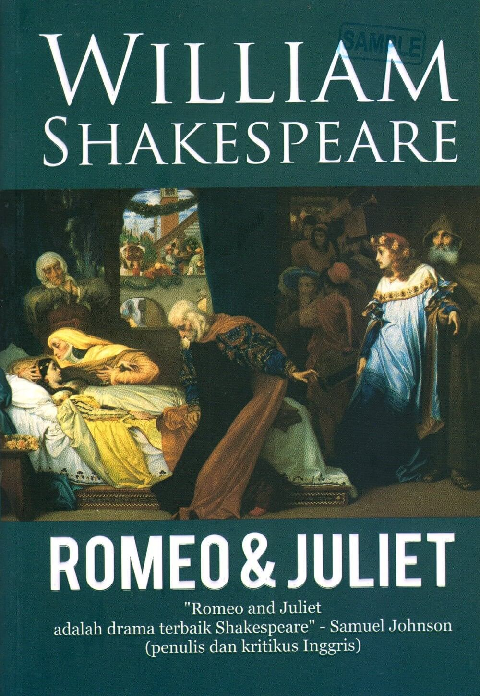
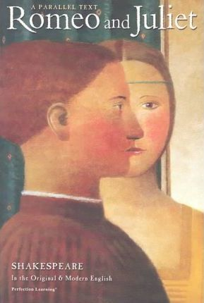
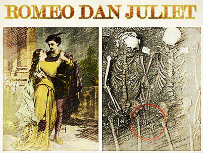

JULIET.
Roman tragik karya William Shakespeare.
Tentang Karya
Romeo dan Juliet adalah tragedi karya William Shakespeare yang ditulis pada awal kariernya. Tragedi ini mengisahkan sepasang mempelai muda yang saling jatuh cinta, namun terhalang karena kedua keluarga mereka saling bermusuhan. Romeo dan Julia merupakan salah satu karya Shakespeare yang paling terkenal, dan juga merupakan salah satu karyanya yang paling sering dipentaskan.
Romeo dan Julia awalnya merupakan roman tragik pada zaman kuno. Cerita Romeo, dan Julia dibuat berdasarkan cerita di Italia, yang diubah menjadi sajak dalam The Tragical History of Romeus and Juliet oleh Arthur Brooke tahun 1562, dan diceritakan kembali dalam bentuk prosa pada Palace of Pleasure karya William Painter tahun 1582, ditulis antara tahun 1591 hingga 1595, Romeo, dan Julia pertama kali dipentaskan tahun 1597.
Shakespeare menggunakan struktur dramatik. Efek seperti perubahan antara komedi, dan tragedi menjadi ketegangan yang memuncak, perluasan karakter kecil, dan penggunaan sub-plot untuk membubuhi cerita, telah dipuji sebagai salah satu tanda awal bakat dramatik Shakespeare. Drama ini berasal dari berbagai bentuk puisi, dan karakter, yang kadang-kadang mengubah jalur pengembangan karakter. Contohnya Romeo yang semakin mahir dalam menyusun soneta selama cerita berlangsung.
Selama Restorasi Inggris, drama ini dihidupkan kembali, dan direvisi oleh William Davenant. David Garrick juga mengubah beberapa bagian, dan adaptasi opera oleh Georg Benda menghilangkan banyak aksi, dan menambah akhir yang bahagia. Penampilan pada abad ke-19, seperti oleh Charlotte Cushman, menggunakan naskah asli Romeo, dan Julia, dan lebih fokus pada realisme yang lebih besar. Pada abad ke-20, Romeo, dan Julia telah diadaptasi kedalam berbagai versi seperti film Romeo and Juliet tahun 1936. Di Indonesia sendiri, terjemahan ke dalam bahasa Indonesianya yang berjudul Romeo, dan Julia dilakukan oleh Trisno Sumardjo.
Sinopsis Karya
Cerita, yang bersetting di Verona, dimulai dengan terjadinya pertempuran di jalan antara keluarga Montague, dan Capulet. Pangeran Verona melerai, dan menyatakan jika terjadi kekerasan, akan dilaksanakan hukuman mati. Selanjutnya, Count Paris berbicara dengan Lord Capulet mengenai rencana menikahi putrinya, tetapi Capulet waspada karena usia Julia masih 13 tahun. Capulet meminta Paris untuk menunggu dua atau tiga tahun lagi, dan mengundangnya hadir pada pesta dansa Capulet. Lady Capulet, dan The Nurse mencoba memaksa Julia untuk menerima lamaran Paris.
Sementara, pada keluarga Montague, Benvolio berbicara dengan sepupunya Romeo, putra Lord Montague, mengenai kemurungan Romeo. Benvolio lalu mengetahui bahwa penyebabnya adalah karena Romeo tergila-gila dengan Rosaline, salah satu keponakan Lord Capulet. Dipaksa oleh Benvolio, dan Mercutio, Romeo hadir pada pesta dansa Capulet dengan harapan bertemu Rosaline. Namun, Romeo justru jatuh cinta kepada Julia setelah menemuinya. Pada bagian yang sering disebut "balcony scene", Romeo mengendap-endap ke halaman Capulet, dan tidak sengaja mendengar ucapan Julia di balkonnya yang menyatakan cintanya kepada Romeo meskipun keluarganya benci dengan Montague. Romeo lalu muncul di depan Julia, dan mereka setuju untuk menikah. Atas bantuan Frater Lawrence, yang ingin kedua keluarga melakukan rekonsiliasi melalui bersatunya anak-anak mereka, Romeo, dan Julia menikah secara rahasia pada hari selanjutnya.
Sepupu Julia, Tybalt, yang tahu bahwa Romeo telah menyusup ke pesta dansa Capulet, menantangnya. Romeo, yang menganggap Tybalt sebagai saudaranya, menolak bertempur. Mercutio yang tersinggung dengan ketidaksopanan Tybalt lalu bertarung dengan Tybalt atas nama Romeo. Mercutio terluka parah ketika Romeo mencoba menghentikan pertempuran. Karena merasa bersalah, Romeo lalu membunuh Tybalt.
Montague setuju bahwa tindakan Romeo mengeksekusi Tybalt adalah tindakan yang adik. Pangeran Verona lalu membuang Romeo dari Verona. Romeo lalu diam-diam menghabiskan malam di kamar Julia, dimana mereka menyelesaikan pernikahannya. Lord Capulet, yang menyalahartikan kesedihan Julia, setuju untuk menikahkannya dengan Paris, dan mengancam untuk tidak mengakuinya sebagai anak jika Julia menolak menikahi Paris. Julia meminta pernikahan ditunda, tetapi ibunya menolak.
Julia lalu mengunjungi Frater Lawrence untuk meminta bantuan, dan ia menawarkannya obat yang akan membuatnya seperti orang yang meninggal (tubuh dingin, tidak ada detak jantung, pucat) selama 42 jam.[4] Frater Lawrence berjanji untuk mengirim pesan mengenai rencana tersebut kepada Romeo, sehingga ia dapat bertemu dengan Julia ketika ia sudah terbangun. Pada malam sebelum pernikahan, Julia meminum obat, dan lalu dibaringkan di pemakaman keluarga setelah keluarganya menemukan Julia "tewas".
Namun, sang pembawa pesan tidak berhasil mencapai Romeo, dan ia mendapat informasi dari pelayannya Balthasar bahwa Julia meninggal. Patah hati, Romeo membeli racun dari seorang Apoteker, lalu pergi ke tempat Julia. Ia bertemu dengan Paris yang sedang melayat Julia. Mengira Romeo sebagai vandal, Paris menyerangnya, lalu Romeo berhasil membunuh Paris. Masih mengira bahwa Julia telah meninggal, ia meminum racun. Julia lalu terbangun, dan melihat Romeo tewas, sehingga ia bunuh diri dengan pisau. Kedua keluarga, dan Pangeran melihat Paris, Romeo, dan Julia tewas. Frater Lawrence lalu menceritakan kembali kisah Romeo, dan Julia. Keluarga Capulet, dan Montague lalu setuju mengakhiri permusuhan di antara mereka.
Photos
 
Contact Us
Bogor, INA
Phone: +62 151515
Email: williamshakespeare@mail.com
Lets get in touch. Send us a message: